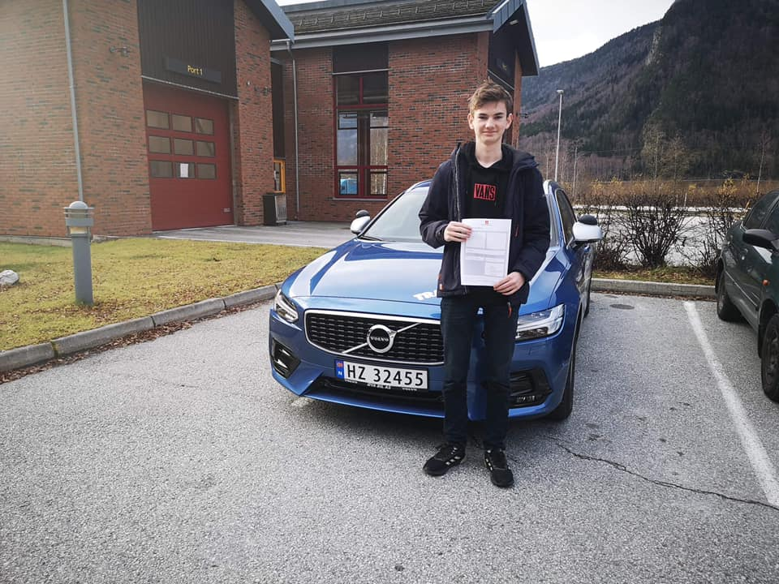

My name is Audun Bergum, I am a 19 year old boy. I was born in Kvam in 2002, but i am currently located in Oslo, where i am studying Information technology at Oslo Metropolitan University.
I concider myself to be a very active boy, both physically and socially. My range is broad, and I am interested in many different activities. Following is a list of his 5 favorite hobbies, in descending order!
- Football
- Gaming
- Coding
- 8-ball
- Chess
I am also very fond of listening to music. At the moment, my favorite artist is Travis Scott, furthermore, my favorite song his 90210.